Azure Monitor & Log Analytics Monitoring Solution
End-to-End Infrastructure Monitoring for a Linux VM on Microsoft Azure
Project Overview
This project demonstrates the implementation of a comprehensive monitoring solution for an Ubuntu Linux virtual machine hosted on Microsoft Azure. The solution was built using Azure Monitor, Azure Monitor Agent (AMA), Data Collection Rules (DCR), Log Analytics Workspace, Azure Monitor Workspace, Kusto Query Language (KQL), Alert Rules, and Action Groups.
The objective was to build a centralized monitoring platform capable of collecting performance metrics, analyzing operational data, generating automated alerts, and validating infrastructure health through real-time monitoring.
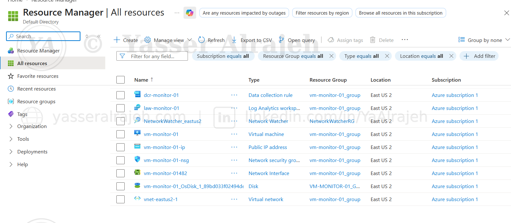
Overview of all resources deployed for the monitoring solution.
1. Business Scenario
Organizations hosting critical workloads in Microsoft Azure require continuous monitoring to ensure service availability, detect abnormal resource utilization, and respond quickly to operational incidents.
The implemented monitoring solution provides:
Continuous infrastructure monitoring
Performance metric collection
Centralized log analysis
KQL-based monitoring
Automated alerting
Email notifications for critical events
2. Project Objectives
Deploy Azure Monitor Agent.
Enable VM Insights.
Configure Data Collection Rules.
Integrate Log Analytics Workspace.
Monitor Linux VM performance.
Execute KQL queries.
Generate performance charts.
Configure CPU alert rules.
Configure Action Groups.
Validate monitoring using CPU stress testing.
3. Azure Resources Created
| Resource Type | Resource Name |
| Resource Group | vm-monitor-01_group |
| Virtual Machine | vm-monitor-01 |
| Virtual Network | vnet-eastus2-1 |
| Network Security Group | vm-monitor-01-nsg |
| Network Interface | vm-monitor-01482 |
| Public IP Address | vm-monitor-01-ip |
| Azure Monitor Agent | Azure Monitor Agent (AMA) |
| Data Collection Rule | dcr-monitor-01 |
| Azure Monitor Workspace | defaultazuremonitorworkspace-eus2 |
| Log Analytics Workspace | law-monitor-01 |
| Alert Rule | High-CPU-Alert |
| Action Group | VMI-ActionGroup-vm-monitor-01 |
4. Solution Architecture
The monitoring solution consists of:
Ubuntu Linux Virtual Machine
Azure Monitor Agent (AMA)
Data Collection Rule (DCR)
Azure Monitor Workspace
Log Analytics Workspace
Azure Monitor Alerts
Azure Action Group
The Azure Monitor Agent continuously collects telemetry from the Ubuntu virtual machine and forwards monitoring data through the Data Collection Rule. Performance metrics are stored in Azure Monitor while operational logs are centralized within Log Analytics Workspace for analysis using Kusto Query Language (KQL).
5. Implementation
5.1 Deploy Ubuntu Virtual Machine
A Linux virtual machine running Ubuntu Server was deployed in Microsoft Azure and configured for secure remote administration using SSH.

Deployment of vm-monitor-01 completed successfully inside vm-monitor-01_group.

Secure SSH connection established to the Ubuntu virtual machine.
5.2 Configure Azure Monitor
Azure Monitor was enabled to provide infrastructure monitoring for the virtual machine.
VM Insights was configured to monitor:
CPU utilization
Memory utilization
Disk activity
VM availability
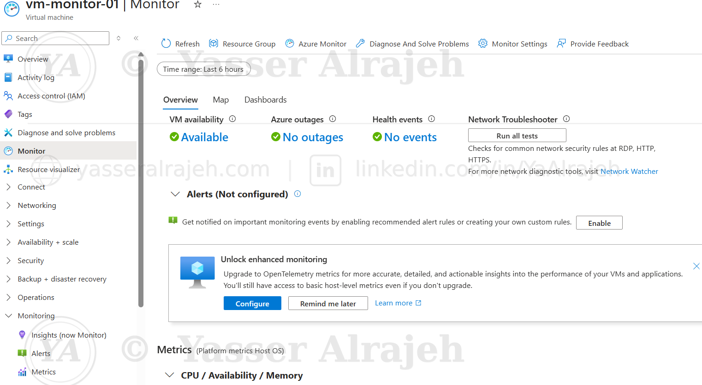
Azure Monitor blade for vm-monitor-01 after enabling monitoring.
5.3 Install Azure Monitor Agent
Azure Monitor Agent (AMA) was installed on the Ubuntu virtual machine.
The agent continuously collects system performance metrics and operational telemetry from the operating system.
5.4 Configure Data Collection Rule
A Data Collection Rule (DCR) was configured to define which monitoring data should be collected.
Collected telemetry included:
Performance Metrics
VM Insights Data
Heartbeat Monitoring

Scoping the Data Collection Rule to vm-monitor-01 within vm-monitor-01_group.
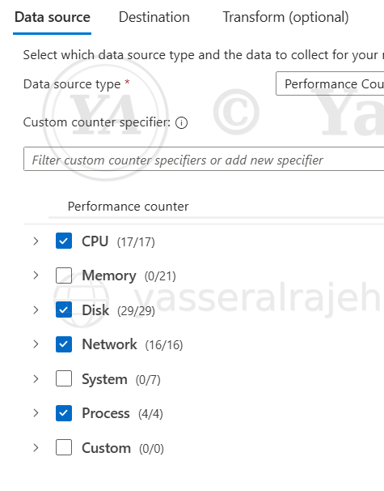
Selecting performance counter categories: CPU, Disk, Network and Process.
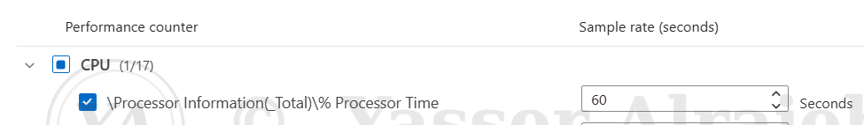
CPU counter — Processor Time sampled every 60 seconds.

Memory counters — Available MBytes and % Available Memory.

Logical Disk counter — % Free Space.
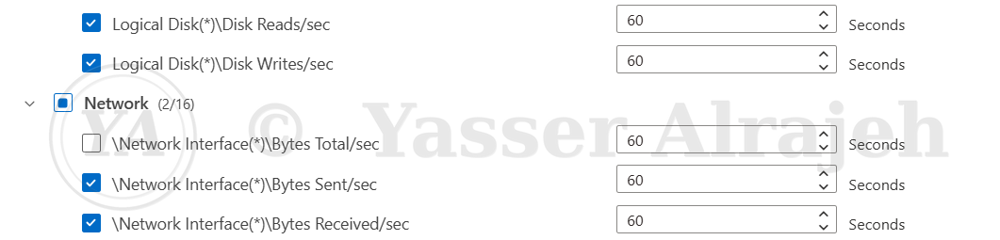
Disk Reads/Writes per second and Network Interface counters.
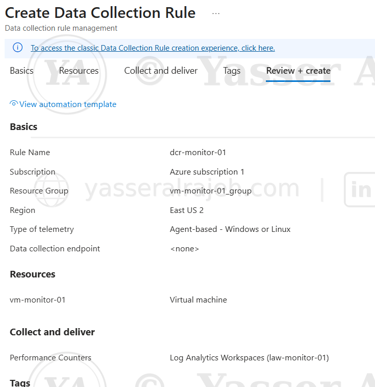
Review + create summary for Data Collection Rule dcr-monitor-01.
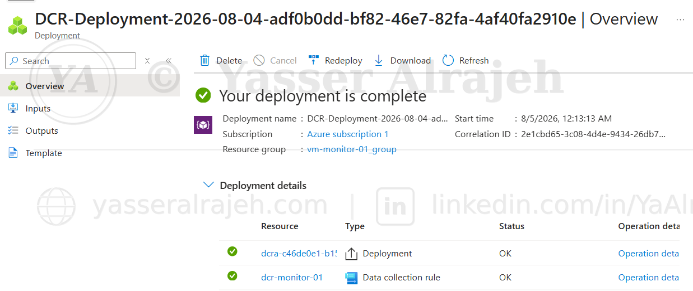
Data Collection Rule deployment completed successfully.
5.5 Configure Log Analytics Workspace
The virtual machine was connected to Log Analytics Workspace to enable centralized storage, querying, and analysis of monitoring data.

Data Collection Rule destination configured to Log Analytics Workspace law-monitor-01.
5.6 Monitor Virtual Machine Performance
Real-time monitoring was successfully enabled for:
CPU utilization
Memory utilization
Disk activity
VM heartbeat
Performance data was continuously collected and displayed within Azure Monitor.
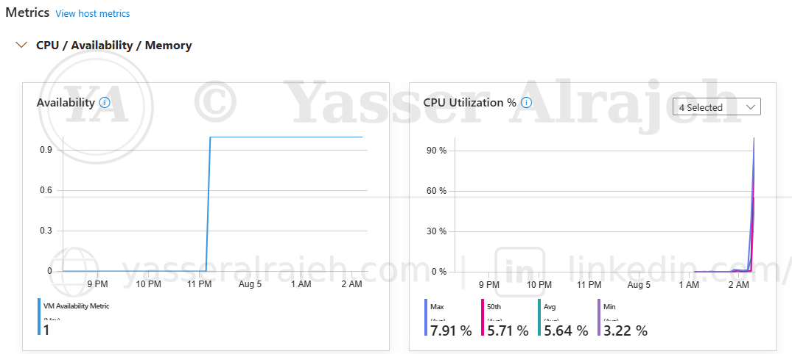
VM availability and CPU utilization metrics.
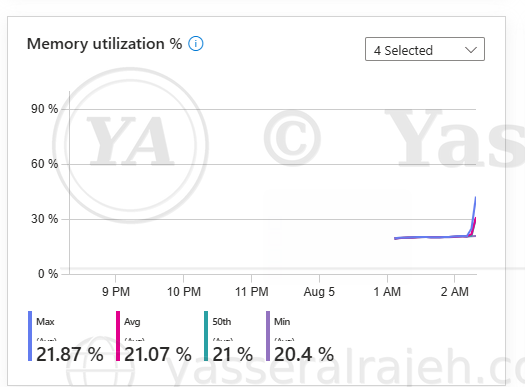
Memory utilization percentage over time.

Top 5 processes by memory utilization.

Network traffic, dropped packets, and network errors.

Logical disk usage and disk IOPS.
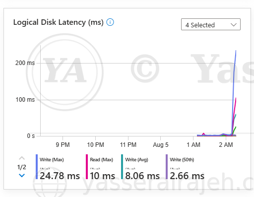
Logical disk latency (ms).
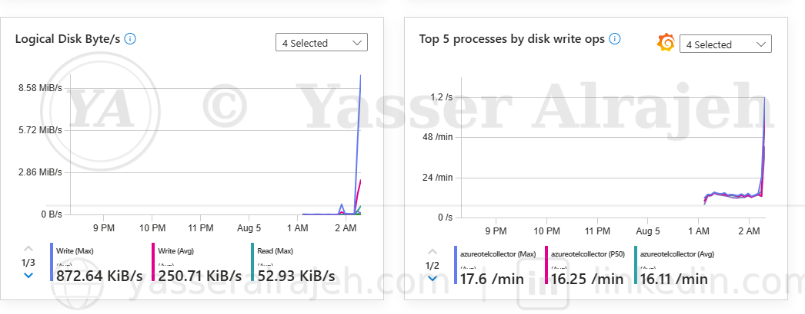
Logical disk throughput and top 5 processes by disk write operations.
6. Kusto Query Language (KQL)
Monitoring data was analyzed using Kusto Query Language (KQL).
6.1 Heartbeat Monitoring
Heartbeat
| where Computer == "vm-monitor-01"
| sort by TimeGenerated desc
This query verifies that the virtual machine continuously reports its operational status.
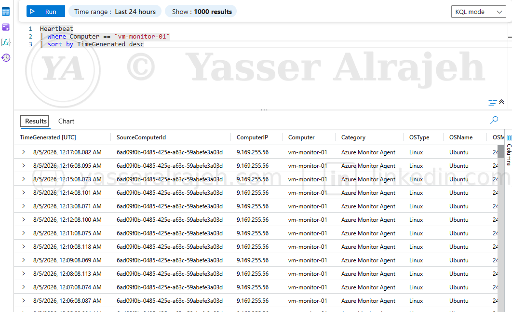
Heartbeat query results confirming continuous agent reporting.
6.2 CPU Utilization
InsightsMetrics
| where TimeGenerated > ago(30m)
| where Namespace == "Processor"
| where Name == "UtilizationPercentage"
| summarize AvgCPU = avg(Val) by bin(TimeGenerated, 1m)
| render timechart
This query visualizes processor utilization over time.

Confirming the UtilizationPercentage metric exists under the Processor namespace.
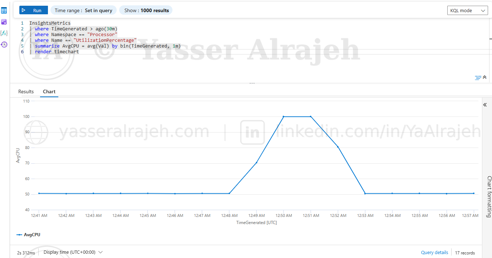
CPU utilization time chart generated from the KQL query.
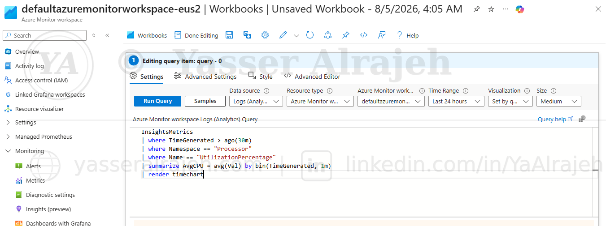
Query saved as a chart inside an Azure Monitor Workbook for dashboarding.
6.3 Memory Performance
Perf
| where TimeGenerated > ago(30m)
| where ObjectName == "Memory"
| summarize AvgMemory = avg(CounterValue) by bin(TimeGenerated, 1m)
| render timechart
This chart displays memory performance collected from the Ubuntu virtual machine.
6.4 Disk Read Performance
Perf
| where TimeGenerated > ago(30m)
| where ObjectName == "Logical Disk"
| where CounterName == "Disk Reads/sec"
| summarize AvgReads = avg(CounterValue) by bin(TimeGenerated, 1m)
| render timechart
This chart visualizes disk read operations over time.
6.5 Disk Write Performance
Perf
| where TimeGenerated > ago(30m)
| where ObjectName == "Logical Disk"
| where CounterName == "Disk Writes/sec"
| summarize AvgDiskWrites = avg(CounterValue) by bin(TimeGenerated, 1m)
| render timechart
This chart visualizes disk write operations over time.
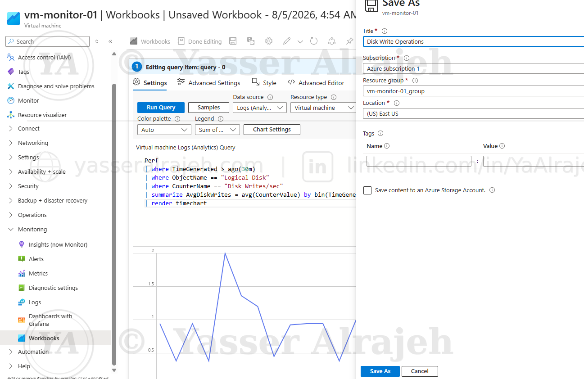
Disk write operations query saved as a Workbook chart ("Disk Write Operations").
7. Alert Configuration
An Azure Monitor alert rule was configured to detect abnormal CPU utilization.
Alert Configuration:
Signal: Percentage CPU
Aggregation: Average
Threshold: 60%
Evaluation Frequency: 1 Minute
Whenever CPU utilization exceeded the configured threshold, Azure Monitor automatically triggered the alert.
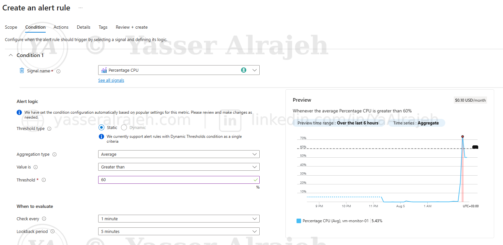
Defining the alert condition: Percentage CPU greater than 60%.
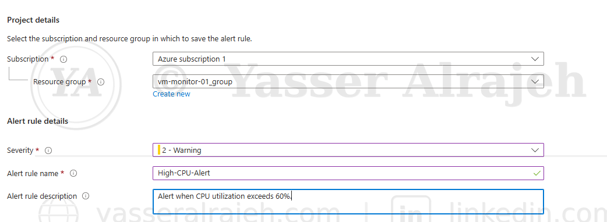
Alert rule details — High-CPU-Alert, severity Warning.
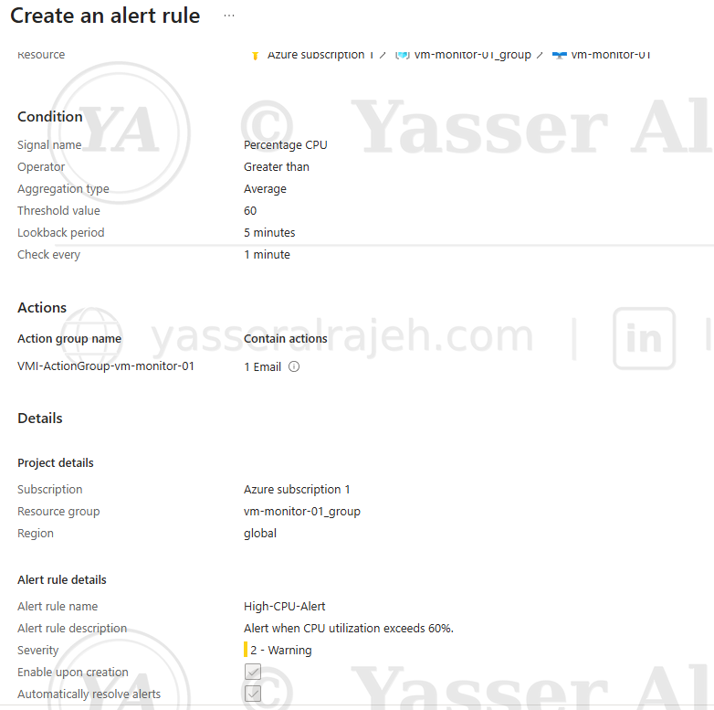
Review + create summary for the High-CPU-Alert rule.

Alert rule enabled and active on vm-monitor-01.
8. Action Group
An Azure Action Group was configured to send email notifications whenever the alert rule was triggered.
This provides immediate notification to administrators during high CPU utilization events.
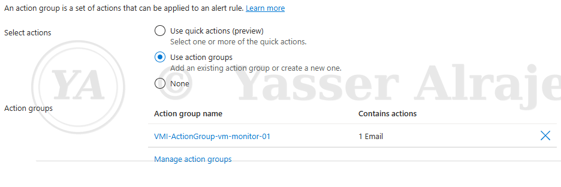
Action group VMI-ActionGroup-vm-monitor-01 configured with an email action.
9. Alert Validation
CPU load was intentionally generated on the Ubuntu virtual machine using:
stress-ng --cpu 2 --timeout 10m
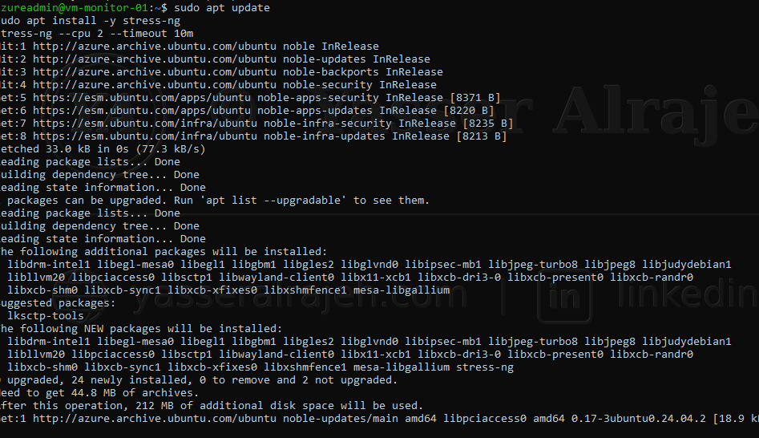
Installing and running stress-ng to generate CPU load on the Ubuntu VM.

Metrics Explorer confirming the CPU spike to over 99% during the stress test.
Azure Monitor successfully:
Detected the CPU spike.
Triggered the High-CPU Alert.
Executed the configured Action Group.
Delivered an email notification.
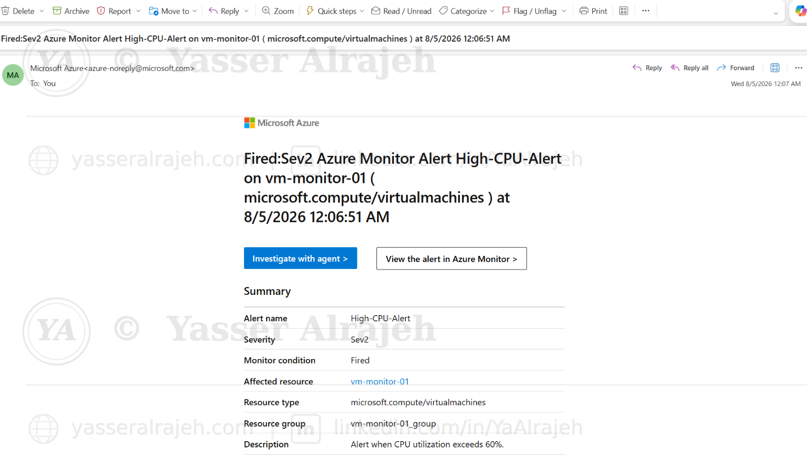
Alert fired: High-CPU-Alert email notification received.

Alert resolved: High-CPU-Alert email notification once CPU returned to normal.
This confirmed that the complete monitoring pipeline was functioning correctly.
10. Results
The monitoring solution successfully provided:
Continuous infrastructure monitoring
Real-time performance analysis
Centralized log collection
KQL-based operational analysis
CPU, Memory, and Disk performance charts
Automated alert generation
Email notification delivery
End-to-end validation using CPU stress testing
11. Skills Demonstrated
Microsoft Azure
Azure Monitor
Azure Monitor Agent (AMA)
Data Collection Rules (DCR)
Log Analytics Workspace
Azure Monitor Workspace
Kusto Query Language (KQL)
Azure Monitor Alerts
Azure Action Groups
Linux Administration
Performance Monitoring
Infrastructure Monitoring
Cloud Operations
Operational Analytics
12. Project Outcome
This project demonstrates the deployment of a complete Azure monitoring solution for Linux infrastructure using native Azure monitoring services. The implementation provides centralized monitoring, real-time performance analysis, automated alerting, operational visibility, and KQL-based analytics, reflecting practical experience with enterprise cloud monitoring and operations.